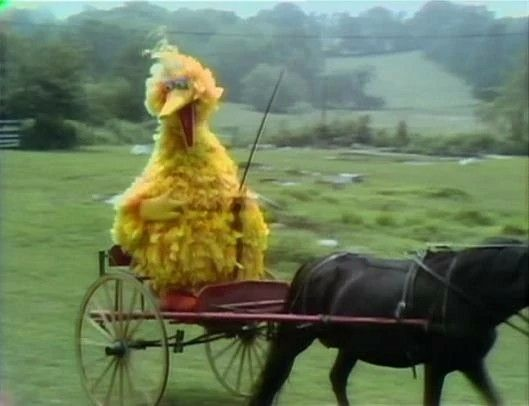

Resultados
Resultado: Barney Vs Garibaldo


Quem Ganharia?
Apesar de Garibaldo possuir grandes poderes e vantagens incríveis, não podemos descartar as habilidades de Barney não é mesmo, em uma luta decisiva daria uma baita luta que provavelmente causaria catástrofes gigantescas como erupções, tsunamis, tornados, tempestades, terremotos, isso mudaria totalmente o clima do mundo, porém não tem como sabermos quem ganharia, pois nunca aconteceu essa luta, mas afinal, e se Garibaldo vence-se, oque aconteceria? e se Barney ganhasse? isso é oque vamos dizer sobre essas duas probabilidades!
E Se Garibaldo Vencer?
Oque aconteceria?
Caso acontece que, Garibaldo ganhe essa luta, Bom com certeza oque aconteceria seria, bom, Provavelmente Garibaldo dominaria o mundo, mas, porque? entenda que Garibaldo sempre teve o sonho de ser um tirano e impor sua vontade e desejos nesse reinado, mas para isso ele precisava de todo o poder, coisa que Barney não permitira ter! quem poderia derrota-lo além de Barney?
Garibaldo se derrotasse Barney, finalmente realizaria seu maior sonho, que é reinar sobre todos os 9 reinos, e principalmente a vila de Barney! Garibaldo iria ponhar e estabelecer leis da maneira da sua vontade e criaria um mundo novo, para novos povos, porém este mundo seria apenas de Aves, quero dizer, humanos e outras raças de animais viveria na terra também, porém, só teria privilégios tudo que se identifica como ave.
As leis que beneficiariam seria somente para aqueles que seria da raça endotérmica, Garibaldo faria concertos que uma vez não conseguira, e faria tudo da sua vontade! Garibaldo alcançaria o poder absoluto, como rei, dominando sobre os humanos e todas as raças rebeldes de maneira imperativo, ou seja, as raças não endotérmicos seriam escravos!
